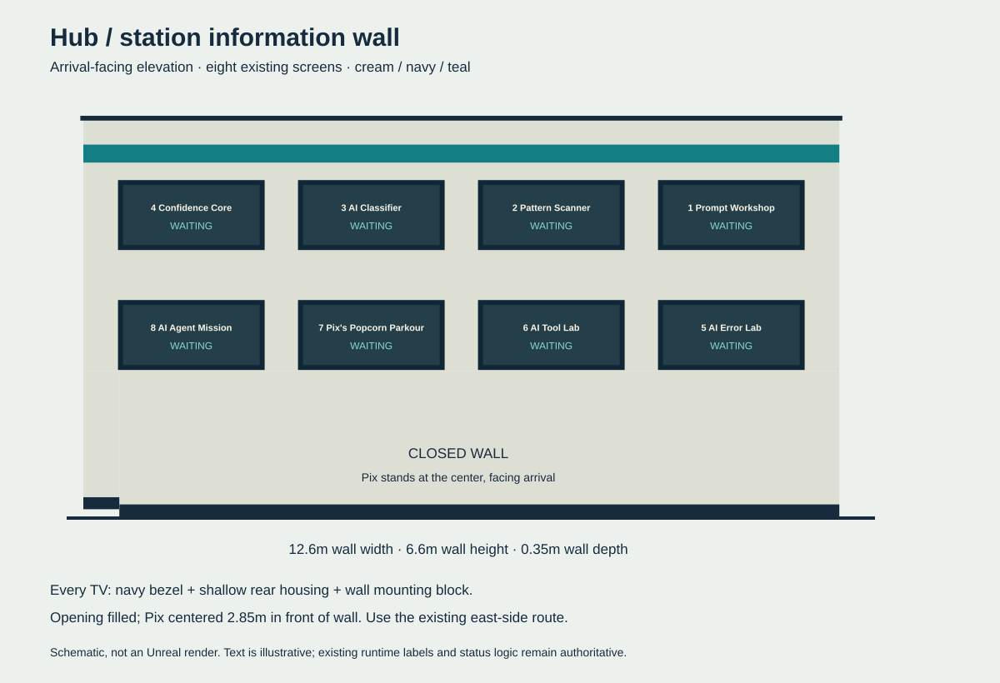

Top-down blockout and requirements · Generated implementation plan
Keep55 feature pieces; extend existing lowerwall/base to close opening. Move existing Pix and Talk to center front, turn face/name toward arrival, synchronize existing invitation center. Full TV titles/poses and bindings remain unchanged.